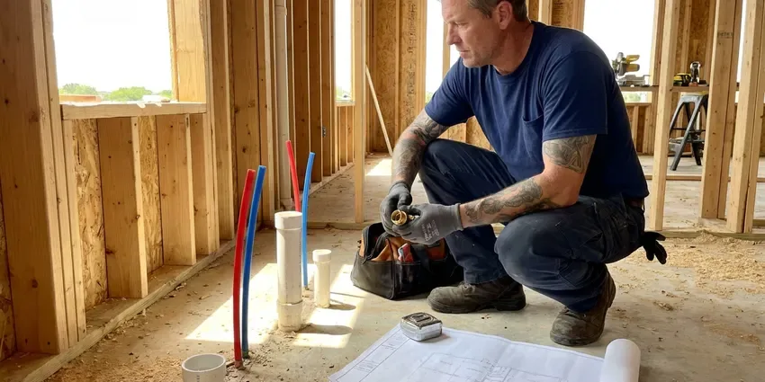

Gas Line Repair in Florence, AL
If you suspect a gas leak or need gas line repair in Florence, AL, don't hesitate. Our certified technicians provide prompt and professional service.
- Fast, Local Response
- Certified Technicians
- Safety First
- Code Compliant

Need Gas Line Repair? Call Us Now in Florence, AL.
Our team is ready to address your gas line concerns quickly and effectively.
Reliable Gas Line Repair Services in Florence, AL
When it comes to gas line repair, expertise and precision are paramount. BRV Plumbing is dedicated to delivering top-tier service for residents in Florence, addressing all gas line concerns with advanced tools and proven techniques, from flexible corrugated stainless steel tubing (CSST) to traditional black iron pipe.
Our expertise includes:
- Detecting and repairing gas leaks.
- Upgrading and relocating gas lines.
- Installing new gas appliance connections.

Additional Plumbing Maintenance Services in Florence, AL
Our maintenance and specialty plumbing services in Florence, AL catch small problems before they become emergencies.


Customers
Why Choose BRV Plumbing for Gas Line Repair in Florence, AL?
Choosing BRV Plumbing for your gas line repair means opting for peace of mind. We prioritize your safety and ensure all repairs are performed to the highest industry standards.
- Safety Focus, Our technicians are trained in gas safety protocols and use specialized equipment to detect and repair leaks without compromise.
- Code Compliance, All gas line repairs are performed according to local Alabama building codes and safety regulations, ensuring your system is up to standard.
- Experienced Plumbers, Our plumbers have extensive experience with various gas piping materials, including black iron pipe, copper, and CSST, providing reliable repairs.
Citywide Coverage
Our commitment extends across the entirety of Florence, providing prompt and professional gas line repair services to all residents. We're familiar with the varied housing stock in the area and adapt our solutions to fit your specific needs.
Experienced Team
The plumbers at BRV Plumbing are not just skilled, they are gas safety experts. Their extensive background in gas line diagnostics and repair means your home's gas system is in the most capable hands.
Safety-First Approach
Safety is the cornerstone of all gas line repair work at BRV Plumbing. We implement rigorous safety checks and follow strict procedures to protect your home and family throughout the repair process.
Trusted Certified Florence Plumbing Services Professionals
At BRV Plumbing, we take pride in providing certified plumbing services throughout Florence, AL. Backed by recognized industry credentials, our experienced plumbers combine technical skill with genuine customer care. Whether it is repair, installation, or maintenance, we follow strict safety and quality standards to deliver lasting results you can trust.
Call Us Now PHCC Plumbing Contractor Recognition
PHCC Plumbing Contractor Recognition Better Business Bureau (BBB) Accreditation
Better Business Bureau (BBB) Accreditation Angi Certified Pro
Angi Certified Pro ISO 9001 Quality Management Certification
ISO 9001 Quality Management CertificationDependable Gas Line Repair Services in Florence, AL
Gas Leak Detection & Repair in Florence
Suspecting a gas leak is a serious concern, and prompt action is crucial. Our technicians use advanced gas leak detection equipment, like electronic sniffers and soap solutions, to pinpoint the exact location of a leak in your home in Florence. Once identified, we perform precise repairs, which can involve patching, replacing sections of pipe, or tightening connections, always ensuring the highest safety standards and proper pressure testing after the repair.

Black Iron Pipe Repair in Florence, AL
Many older homes in Florence, AL utilize black iron pipes for gas lines. While durable, these pipes can corrode over time, especially at joints, leading to leaks. Our team is expert in repairing and replacing sections of black iron pipe, ensuring secure, threaded connections and applying appropriate pipe sealant for a leak-free system. We also check for proper grounding and bonding to prevent electrolysis.
Corrugated Stainless Steel Tubing (CSST) Repair in Florence
CSST is a common flexible gas piping material found in many modern Alabama homes. While convenient for installation, it can be susceptible to damage from lightning strikes or physical impact. Our specialists in Florence are trained to repair or replace damaged CSST, ensuring all connections are properly seated and sealed with approved fittings and that the system is correctly bonded and grounded according to manufacturer specifications and local codes.
Gas Appliance Line Repair in Florence, AL
Your gas furnace, water heater, stove, or dryer relies on a properly functioning gas line. If you notice issues with a specific appliance, the problem might be with its dedicated gas line. We repair or replace faulty appliance connectors, shut-off valves, and flexible supply lines, ensuring all connections are tight and that the correct size and type of line are used for optimal appliance performance and safety in Florence, AL.
Emergency Gas Line Repair in Florence
Gas leaks are emergencies that require immediate attention. BRV Plumbing offers emergency gas line repair services in Florence to address urgent situations quickly and safely. Our rapid response team is equipped to handle critical gas line failures, working efficiently to isolate the leak, perform the necessary repairs, and restore safety to your home, often coordinating with the local gas utility as needed.
Gas Line Relocation & Upgrades in Florence, AL
Renovating your home or adding a new gas appliance in Florence, AL might require relocating or upgrading your existing gas lines. Our plumbers can safely extend or reroute gas lines to accommodate new layouts, ensuring proper sizing for increased demand and compliance with all current building codes. This often involves calculating BTU requirements for new appliances and selecting the appropriate pipe diameter.
Permit & Inspection Guidance in Florence
Many gas line repairs, especially those involving significant alterations or new installations, require permits and inspections from Florence building authorities. We can guide you through this process, ensuring all necessary paperwork is filed and that our work meets the stringent requirements for final inspection. This helps guarantee the long-term safety and legality of your gas system.

Cost-Effective Gas Line Repair Solutions in Florence, AL
We understand that gas line repairs can be an unexpected expense. BRV Plumbing strives to provide cost-effective and transparent solutions for residents in Florence, AL. We offer detailed estimates before any work begins, outlining the scope of repair, materials, and labor. Our goal is to provide durable repairs that prevent future issues, saving you money in the long run while ensuring your safety.
Trusted Gas Line Repair Near Me in Florence, AL
When you search for 'gas line repair near me' in Florence, you want a local company that understands the unique infrastructure and building codes of Alabama. BRV Plumbing is deeply rooted in the community, providing prompt and reliable service to our neighbors. We are always just a call away, ready to dispatch a qualified technician to your location.
Our local presence means we can respond quickly to your gas line repair needs anywhere in Florence, AL. We pride ourselves on being accessible and offering personalized service that larger, non-local companies cannot match. Trust BRV Plumbing to be your local, expert gas line repair partner.
BRV Plumbing at a Glance
- Licensed and insured plumbers serving Florence, AL
- Same-day appointments and 24/7 emergency response
- Upfront, flat-rate pricing before work begins
- 4.8-star rated by 549+ Alabama customers
Florence Map
Florence Information
- Population
- 42,437
- Area codes
- 256/205/662
- Service area
- Florence and communities within 40 miles
- Nearby
- Athens, Decatur, Madison, Huntsville
Given Alabama's climate, which can see both high humidity and occasional freezing temperatures, proper gas line installation and maintenance in Florence, AL are crucial to prevent corrosion and stress fractures that can lead to dangerous leaks.
Expert Services
Trust our professionals for reliable BRV Plumbing solutions in Florence, AL.
Our Specialized Plumbing Services in Florence, AL
At BRV Plumbing, we provide a complete range of plumbing services across Florence, AL. From leak detection to full system installations, our team ensures fast, precise, and affordable service for both residential and commercial properties. Explore our core services below:


How Our Gas Line Repair Process Works in Florence, AL
At BRV Plumbing, we follow a structured approach to gas line repair, ensuring every step is handled with precision and adherence to safety protocols for your peace of mind.
Request a Quote
Contact BRV Plumbing by calling (256) 391-9413 to schedule an appointment. We'll discuss your gas line issue and arrange for a technician to visit your Florence home.
Thorough Diagnosis
Our certified technician will arrive promptly to inspect your gas lines, using specialized tools to accurately diagnose the problem, whether it's a leak or damage.
Safe & Precise Repair
We will explain the required repairs and provide a clear estimate. Upon your approval, our team will perform the repair using high-quality materials and strict safety standards.
Frequently Asked Questions About Gas Line Repair in Florence
The cost of gas line repair in Florence, AL can vary widely depending on the nature and extent of the damage, the type of piping, and accessibility. Minor repairs like tightening a connection might range from $150 to $400, while replacing a significant section of pipe or dealing with an emergency leak could be $500 to $2,500 or more. We provide a detailed estimate after a thorough inspection.
While specific preventative maintenance for gas lines is less common than for other plumbing systems, we do recommend periodic visual inspections, especially for older homes. During other plumbing service calls, we can often perform a quick check of visible gas lines and connections to identify potential issues before they become emergencies.
If you suspect a leak at your gas meter or the main service line leading to your home, do not attempt to fix it yourself. This is the responsibility of the gas utility company. Evacuate your property immediately and call their emergency line. We can assist with repairs to your private gas lines once the utility has addressed their portion.
Most standard gas line repairs, such as fixing a small leak or replacing a short section of pipe, can be completed within a few hours. More complex repairs, like extensive pipe replacement or relocation, might take a full day or require multiple visits. We'll give you an accurate timeline after our initial assessment.
Common signs of a gas leak include a distinct sulfur-like or rotten egg odor, a hissing sound near a gas line or appliance, visible damage to a gas pipe, or plants dying near an outdoor gas line. If you experience any of these, evacuate immediately and call the gas company and then us.
Yes, many significant gas line repairs and all new gas line installations in Florence typically require a permit from local building authorities. This ensures the work meets safety codes. BRV Plumbing will advise you on permit requirements and can help facilitate the necessary inspections.
Absolutely not. Gas line repair is extremely dangerous and should only be performed by licensed and certified professionals. Incorrect repairs can lead to serious gas leaks, explosions, fires, and carbon monoxide poisoning. Always call a professional like BRV Plumbing.
Our technicians are experienced with all common types of gas piping found in Alabama homes, including traditional black iron pipe, copper gas lines, and Corrugated Stainless Steel Tubing (CSST). We use the appropriate tools and techniques for each material to ensure a safe and durable repair.
What People Are Saying About Our Plumbing Experts?

Robert G.
The trenchless sewer replacement saved our front yard. They walked us through the camera inspection footage first so we knew exactly what we were paying for.
Sewer Line Replacement · Madison, AL
Laura S.
I scheduled a water heater replacement, and the team made the process smooth and affordable. The new unit works perfectly, and they cleaned up after completing the job.
Water Heater Replacement · Decatur, AL
Patricia H.
We had a slab leak that two other companies could not find. BRV Plumbing located it in under an hour, explained our options, and the price matched the quote to the dollar.
Slab Leak Repair · Florence, AL
Emily R.
I called BRV Plumbing for plumbing repair, and the technician was fast, polite, and thorough. They explained the problem clearly and fixed it the same day. I will definitely hire them again. Highly recommended!
Plumbing Repair · Florence, AL
Daniel K.
A pipe burst at 11 pm and they actually answered. The plumber showed up within the hour, shut everything down, and had us back to normal the next morning. Could not ask for more.
Emergency Plumbing · Vestavia Hills, AL
Mark T.
When our office needed drain cleaning, BRV Plumbing provided quick, reliable service. The plumber arrived on time and made sure every drain flowed perfectly before leaving. Very satisfied.
Drain Cleaning · Huntsville, AL